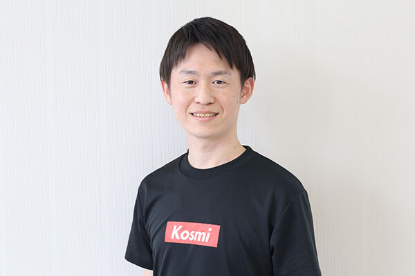
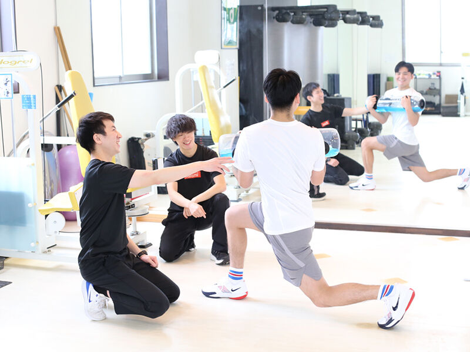
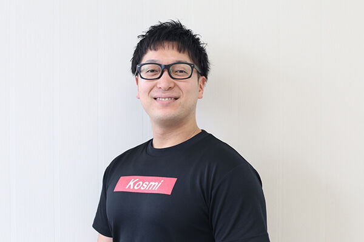
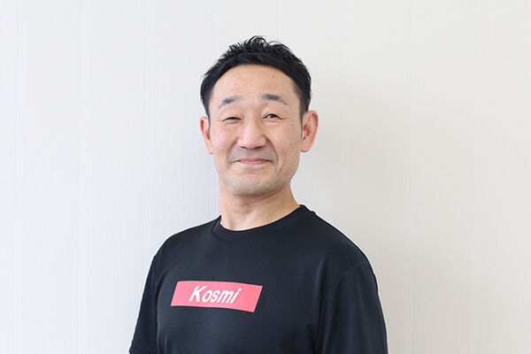
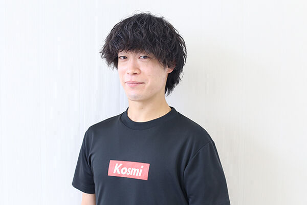
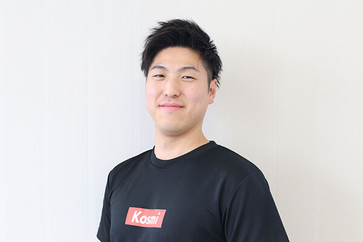
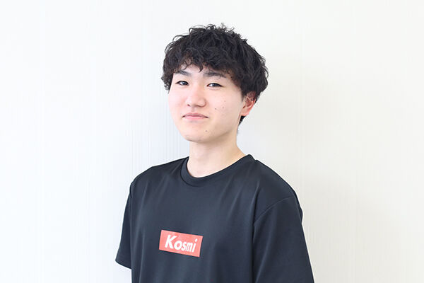
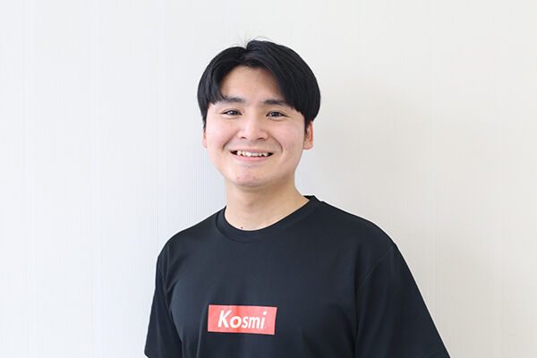

01加藤 雄樹Yuki Kato
- 出身地
- 新潟県阿賀町
- 出身校
- 新潟保健医療専門学校
- 保有資格
- 理学療法士
- IOC Diploma in Sports Physical Therapies
- 認定理学療法士（運動器）
- 外部活動・経歴
- 全日本スキー連盟スノーボード強化スタッフスノーボードハーフパイプ メディカルトレーナー
- 東京オリンピック 理学療法スタッフ（2021）


01
02
03
04
05
06
07休診日／木曜午後・土曜午後・日曜・祝祭日 ※受付は午前、午後とも30分前からです。